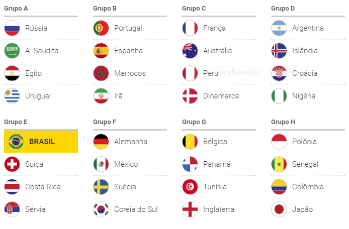

Sobre a Copa do mundo de 2018
A Copa do Mundo FIFA de 2018 ou Campeonato Mundial de Futebol FIFA de 2018 será a vigésima primeira edição deste evento esportivo, um torneio internacional de futebol masculino organizado pela Federação Internacional de Futebol (FIFA), que ocorrerá na Rússia, anfitriã da competição pela primeira vez. Com onze cidades-sede, o campeonato será disputado entre 14 de junho e 15 de julho. A edição de 2018 será a primeira realizada no Leste Europeu e a décima primeira realizada na Europa, depois de a Alemanha ter sediado o torneio pela última vez no continente em 2006. Esta edição da Copa do Mundo, juntamente com a Universíada de Verão de 2013 e os Jogos Olímpicos de Inverno de 2014, que também foram realizados em território russo, são os primeiros eventos esportivos de importância mundial realizados no país desde os Jogos Olímpicos de Verão de 1980. A FIFA escolheu o país por causa do aumento do interesse da população russa no futebol, graças a investimentos financeiros no esporte, do aumento da importância da Primeira Liga Russa e a migração de jogadores estrangeiros para o país, além da ascensão econômica da Rússia após a dissolução da União Soviética em 1991. Os outros países que se candidataram à sede da competição foram a Inglaterra e as candidaturas conjuntas de Holanda/Bélgica e Portugal/Espanha. O governo russo pretendia entregar todas as obras para a Copa do Mundo da FIFA 2018 um ano antes do torneio. Joseph Blatter, ex-presidente da FIFA, afirmou que as organizações estão mais avançadas em comparação com as obras do Brasil, que sediou a edição anterior. Em 28 de março de 2017, a seleção brasileira foi a primeira seleção além do país-sede, Rússia, a se classificar para a Copa do Mundo de 2018.
Sorteio
A Fifa realizou o sorteio dos grupos da Copa do Mundo de 2018. A Rússia, que estava no pote 1 por ser a anfitriã do torneio, ficou no Grupo A ao lado de Arábia Saudita, Egito e Uruguai. O jogo de abertura entre russos e sauditas, no dia 14, será em Moscou. A seleção brasileira caiu no Grupo E e faz sua estreia no dia 17 de junho em Rostov contra a Suíça. Depois pega a Costa Rica no dia 22 de junho, em São Petersburgo, e fecha a primeira fase contra a Sérvia em Moscou, dia 27 de junho.
Atual campeã do mundo, a Alemanha caiu no Grupo F ao lado de México, Suécia e Coreia do Sul. Os alemães podem enfrentar o Brasil nas oitavas de final da Copa do Mundo. Para isso acontecer, basta que um fique em primeiro e outro em segundo em suas respectivas chaves.
A seleção da Argentina terá pela frente no Grupo D Islândia, Croácia e Nigéria. A estreia dos hermanos no Mundial da Rússia será contra a Islândia em Moscou, dia 16 de junho.
Quem apresentou e conduziu o sorteio dos grupos da Copa de 2018 foi o ex-jogador e ídolo inglês Gary Lineker. Ele teve a ajuda de outros astros do futebol para escolher as bolinhas nos potes: Cafu, Maradona, Diego Forlán, Fabio Cannavaro, Carles Puyol, Laurent Blanc, Gordon Banks e Nikita Simonyan.
O primeiro discurso na cerimônia foi do presidente da Rússia, Vladimir Putin. Ao lado de Gianni Infantino, presidente da Fifa, o líder russo garantiu que o país está de braços abertos para receber turistas e torcedores de todo o mundo. - Nosso país pretende realizar a Copa no mais alto nível, para que os jogadores possam demonstrar sua maestria e verdadeiro futebol. Temos certeza que impressões inesquecíveis serão deixadas naqueles que vierem à Rússia. Verão não só os jogos, mas conhecerão a cultura russa, nossa história e natureza única. Também poderão sentir nossa alegria tradicional, ainda mais porque os jogos serão realizados em 11 cidades, e os fãs terão oportunidades de visitar as regiões do país. Sabemos receber nossos amigos - disse Putin.
Sedes e estádios
A Copa do Mundo da Rússia terá 11 sedes, com 12 estádios diferentes – dois deles em Moscou. Além da capital do país, a Fifa e Comitê Organizador Local (COL) optaram por escolher cidades importantes como São Petersburgo, a segunda maior, e Kazan, com importância histórica, além de Sochi, que abrigou a Olimpíada de Inverno de 2014. Todas as sedes estão na parte europeia da Rússia, com Iecaterimburgo sendo a cidade mais ao oriente de todo o Mundial, e Caliningrado, a mais próxima do restante da Europa – inclusive esta é a única sede separada no território russo, sem conexão direta: trata-se de um enclave situado entre a Lituânia e a Polônia.
O principal palco do Mundial será o estádio Luzhniki, na capital russa, o maior de todos do torneio, com capacidade para 81 mil fãs. Ele abrigará a grande final, além do jogo de abertura, uma semifinal, uma oitava de final e mais três jogos da fase de grupos. O menor estádio da Copa fica em Caliningrado, com 35.212 lugares.
Brasil na copa
| Jogos | |||
|---|---|---|---|
| Dia | Horário | Contra | Local |
| 17/06 | 15:00h | Suiça | Rostovon-Don |
| 22/06 | 09:00h | Costa Rica | Saint Petesburg |
| 27/06 | 15:00h | Sérvia | Moscou |
O Brasil estreia contra a Suiça no domingo, dia 17 de junho, às 15h, em Rostov-on-Don.
O segundo jogo da primeira fase é numa sexta-feira, dia 22 de junho, às 9h, em Saint Petersburg, contra Costa Rica.
O terceiro jogo, na quarta-feira, dia 27, será às 15h, em Moscou, no estádio Spartak, contra a Sérvia.
Classificam-se os dois primeiros de cada grupo e os dois últimos serão eliminados.
Na segunda fase todos os jogos serão eliminatórios.